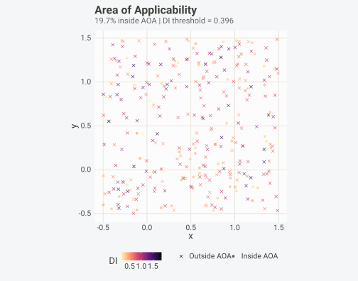
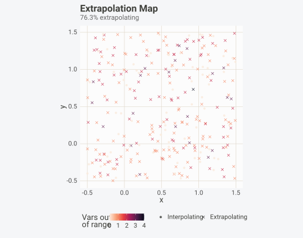
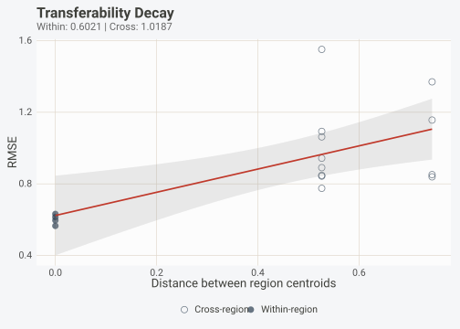
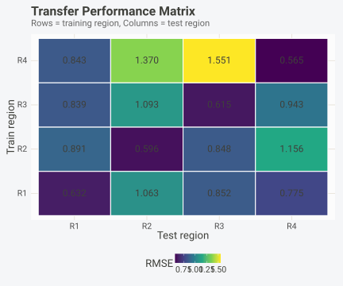
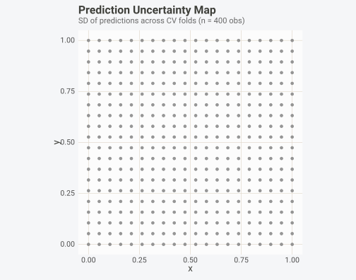
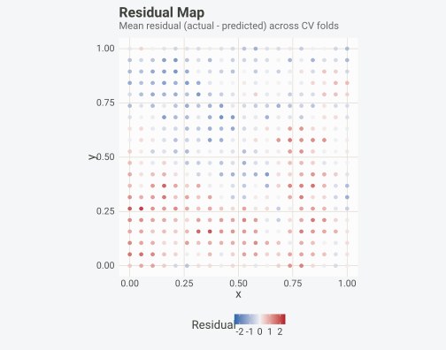
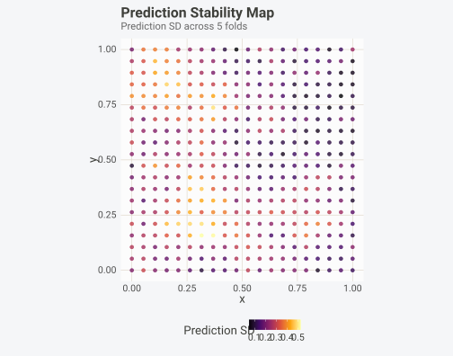
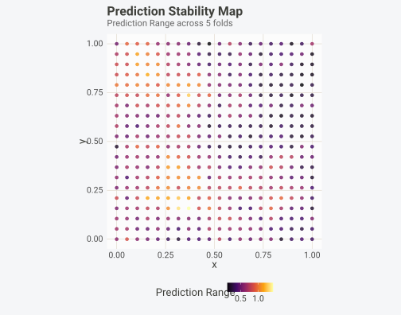
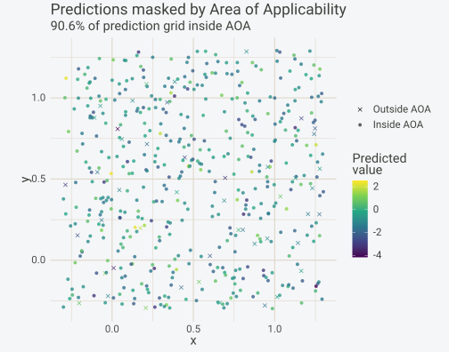
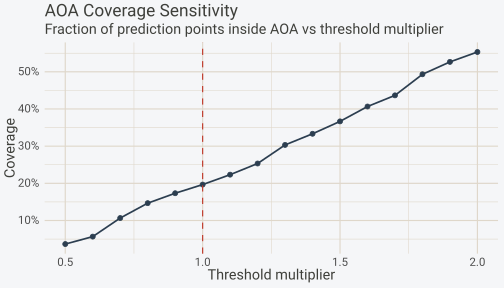

Area of Applicability and Extrapolation Detection
Gilles Colling
2026-10-10
Source:vignettes/aoa-extrapolation.Rmd
aoa-extrapolation.RmdInstallation
install.packages("pak") # development version
pak::pak("gcol33/BORG")Introduction
A model that performs well on the test set still tells you nothing about where it can be trusted. If training data comes from lowland forests and the model is asked to predict in alpine meadows, the accuracy numbers from cross-validation do not apply. The model has never seen those environmental conditions, and its predictions there are extrapolations masquerading as interpolations.
This problem is pervasive in spatial ecology but not unique to it. Any prediction task where the deployment domain differs from the training domain faces the same risk: species distribution models projected to new continents, crop yield forecasts extrapolated to future climate conditions, land cover classifiers applied to satellite imagery from regions without ground truth. The cross-validation error, however carefully estimated, applies only to the conditions represented in the training data.
Roberts et al. (2017) showed that random cross-validation inflates performance when data are spatially autocorrelated, because nearby points that share information end up in both training and test sets. Meyer and Pebesma (2021) addressed a complementary problem: even with spatially blocked CV, the reported accuracy applies only within the environmental space covered by training data. Blocked CV does not solve everything. They formalized the concept of an area of applicability (AOA), the region in feature space where a model can make reliable predictions because training data covers that region sufficiently. Their dissimilarity index (DI) measures how far each prediction point is from the nearest training observation in a scaled, weighted feature space. Points with DI above a threshold derived from the training data’s own internal distances fall outside the AOA. Predictions at those points should be excluded from downstream analysis or at least flagged as unreliable.
BORG implements the full Meyer and Pebesma framework, plus additional tools for extrapolation detection (univariate range checks and Mahalanobis distance), geographic transferability assessment (region-to-region performance decay), prediction uncertainty mapping, and stability analysis. Together, these functions answer the question that cross-validation metrics alone cannot: where does the model work, and where does it break?
This vignette walks through each tool in detail, using synthetic spatial data where the ground truth is known. We start with the dissimilarity index, build up to the full AOA, then move to extrapolation detection, transferability assessment, prediction and stability maps, and finally show how to combine everything with blocked cross-validation for a complete spatial modelling pipeline.
The Dissimilarity Index
What it measures
The dissimilarity index quantifies how different a new observation is
from the training data in feature space. For each prediction point,
borg_di() computes the weighted Euclidean distance to the
nearest training observation after standardizing all predictors to zero
mean and unit variance. If variable importance weights are provided
(from borg_importance()), predictors that matter more for
the model receive higher weight in the distance calculation, so the DI
reflects model-relevant dissimilarity rather than raw distance
across all variables equally.
The function also computes a threshold: the mean plus one standard deviation of the leave-one-out DI values within the training data. This threshold represents the upper bound of “normal” dissimilarity that the training data exhibits internally. Any new point with DI above this threshold is more dissimilar to the training data than most training points are to each other, and predictions there should be treated with caution.
Basic usage
We start by generating spatial data with known autocorrelation.
sim <- borg_simulate(
n = 400,
type = "spatial",
n_predictors = 5,
signal_strength = 0.3,
autocorrelation = 0.6,
seed = 42
)
dat <- sim$data
predictors <- paste0("x", 1:5)The spatial simulation places observations on a grid with Gaussian
spatial autocorrelation. Coordinates live in columns x and
y, predictors in x1 through x5,
and the response in y.1 (renamed by R because
y is already taken by the coordinate column).
Now suppose we want to predict at new locations that extend beyond the training domain. We create a prediction grid that covers a wider spatial extent.
set.seed(99)
new_data <- data.frame(
x = runif(300, -0.5, 1.5),
y = runif(300, -0.5, 1.5)
)
# Generate predictor values with some shift to simulate environmental novelty
for (p in predictors) {
new_data[[p]] <- rnorm(300, mean = 0.5, sd = 1.5)
}
di <- borg_di(train = dat, new = new_data, predictors = predictors)
summary(as.numeric(di))
#> Min. 1st Qu. Median Mean 3rd Qu. Max.
#> 0.1144 0.4700 0.7178 0.7539 1.0024 1.8672
cat("Threshold:", attr(di, "threshold"), "\n")
#> Threshold: 0.3963788
cat("Points above threshold:", sum(di > attr(di, "threshold")), "of", length(di), "\n")
#> Points above threshold: 241 of 300The threshold is derived entirely from the training data’s internal structure and does not depend on the prediction locations. It remains stable regardless of where you plan to predict. Points with DI above the threshold are in parts of feature space that the training data does not cover well.
Variable importance weighting
When predictors are weighted by their importance to the model, the DI focuses on the dimensions that actually matter for prediction. A point might be far from the training data in an irrelevant predictor but close in the predictors that drive the model, and without weighting, the DI would flag it as dissimilar even though the model would interpolate confidently.
# Fit a model and compute importance
model <- lm(y.1 ~ x1 + x2 + x3 + x4 + x5, data = dat)
imp <- borg_importance(model, dat, target = "y.1", coords = c("x", "y"),
predictors = predictors, n_rep = 5)
# Weighted DI
di_weighted <- borg_di(
train = dat, new = new_data,
predictors = predictors,
weights = imp$importance
)
cat("Unweighted threshold:", round(attr(di, "threshold"), 3), "\n")
#> Unweighted threshold: 0.396
cat("Weighted threshold: ", round(attr(di_weighted, "threshold"), 3), "\n")
#> Weighted threshold: 0.31Weighting changes both the DI values and the threshold. If the model relies heavily on a few predictors, the weighted DI becomes more permissive for points that differ only in unimportant variables. Points that differ in the variables that drive the model will receive higher DI values and face a tighter threshold.
Area of Applicability
From DI to a binary mask
The dissimilarity index is a continuous measure. The area of
applicability converts it into a binary decision: inside or outside.
borg_aoa() wraps borg_di() and applies the
threshold to produce a data frame with a logical aoa
column. It also computes the local point density (LPD), which counts how
many training observations fall within the threshold distance of each
prediction point in feature space. Points inside the AOA but with low
LPD sit near the boundary, and predictions there may still be less
reliable than at points with high LPD.
Full worked example
aoa <- borg_aoa(
train = dat,
new = new_data,
predictors = predictors,
coords = c("x", "y")
)
aoa
#> BORG Area of Applicability
#> 59 / 300 points inside AOA (19.7%)
#> DI threshold: 0.396
#> DI range: [0.114, 1.867]The print method reports the fraction of prediction points inside the
AOA, the DI threshold, and the DI range. Points outside the AOA have
aoa = FALSE and should be excluded from accuracy reporting
and, ideally, from any downstream analysis that assumes reliable
predictions.
autoplot(aoa)
The spatial map colours points by their dissimilarity index and marks those outside the AOA with a different symbol. In this example, points at the edges of the prediction grid, far from the training data’s spatial extent, tend to fall outside the AOA because the environmental conditions there were not sampled during training.
Cross-validated threshold
The default threshold (mean + SD of training LOO-DI) is a reasonable starting point, but it ignores the specific CV strategy used for model evaluation. When you already have spatial CV folds, you can derive the threshold from the DI values of cross-validated test sets, which calibrates it to the same degree of spatial separation that the CV folds impose.
cv <- borg_cv(dat, coords = c("x", "y"), target = "y.1", v = 5)
aoa_cv <- borg_aoa(
train = dat,
new = new_data,
predictors = predictors,
coords = c("x", "y"),
folds = cv
)
cat("Default threshold: ", round(attr(aoa, "threshold"), 3), "\n")
#> Default threshold: 0.396
cat("CV-based threshold:", round(attr(aoa_cv, "threshold"), 3), "\n")
#> CV-based threshold: 0.645
cat("AOA coverage (default): ", sprintf("%.1f%%", 100 * mean(aoa$aoa)), "\n")
#> AOA coverage (default): 19.7%
cat("AOA coverage (CV-based):", sprintf("%.1f%%", 100 * mean(aoa_cv$aoa)), "\n")
#> AOA coverage (CV-based): 41.3%When folds are provided, the threshold is set to the 95th percentile of the cross-validated DI distribution. This is typically more conservative than the default because spatially blocked folds impose larger train-test separation than leave-one-out distances within the training data. Using the CV-based threshold aligns the AOA with the conditions under which the model’s accuracy was actually estimated.
Manual threshold
You can also set the threshold manually. This is useful when you want to explore how sensitive the AOA boundary is to the threshold value, or when domain knowledge suggests a specific cutoff.
# More conservative: lower threshold excludes more points
aoa_strict <- borg_aoa(
train = dat,
new = new_data,
predictors = predictors,
coords = c("x", "y"),
threshold = attr(aoa, "threshold") * 0.8
)
# More permissive: higher threshold includes more points
aoa_lenient <- borg_aoa(
train = dat,
new = new_data,
predictors = predictors,
coords = c("x", "y"),
threshold = attr(aoa, "threshold") * 1.5
)
cat("Strict AOA: ", sprintf("%.1f%%", 100 * mean(aoa_strict$aoa)), "inside\n")
#> Strict AOA: 14.7% inside
cat("Default AOA: ", sprintf("%.1f%%", 100 * mean(aoa$aoa)), "inside\n")
#> Default AOA: 19.7% inside
cat("Lenient AOA: ", sprintf("%.1f%%", 100 * mean(aoa_lenient$aoa)), "inside\n")
#> Lenient AOA: 36.7% insideThe sensitivity of the AOA boundary to the threshold tells you something about the data. If a small threshold change flips many points between inside and outside, the prediction region sits near the boundary of the training distribution. If the AOA is stable across thresholds, either the training data covers the prediction domain well or the prediction points are far enough away that no reasonable threshold would include them.
Extrapolation Detection
Univariate and multivariate checks
While the AOA uses a weighted nearest-neighbour distance,
borg_extrapolation() takes a different approach: it checks
whether each prediction point falls outside the training data’s
environmental envelope. The check works at two levels.
The univariate check tests whether each predictor value at the prediction point falls outside the observed range in the training data. If temperature in the training data ranges from 5 to 25 degrees and the model is asked to predict at a location where temperature is 30 degrees, that predictor is flagged as out of range. The function counts how many predictors are out of range and lists which ones, making it easy to identify the specific environmental axes where extrapolation occurs.
The multivariate check uses the Mahalanobis distance from each prediction point to the centroid of the training data in feature space. This distance accounts for the correlation structure among predictors, so a point can be within the univariate range of every individual variable yet still be an outlier in the joint distribution. Consider a training set where temperature and precipitation are positively correlated: hot, wet sites and cool, dry sites are well represented, but hot, dry combinations never occur. A prediction at a hot, dry location would pass all univariate range checks but would have a large Mahalanobis distance, correctly flagging it as novel.
Worked example
ext <- borg_extrapolation(
train = dat,
new = new_data,
predictors = predictors,
coords = c("x", "y")
)
ext
#> BORG Extrapolation Check
#> 229 / 300 points extrapolating (76.3%)
#> Most common out-of-range variables:
#> x2: 106 points
#> x1: 104 points
#> x3: 55 points
#> x4: 51 points
#> x5: 38 pointsThe print method summarizes how many prediction points are extrapolating and identifies the most frequently out-of-range variables. This tells you which environmental gradients your training data fails to cover.
autoplot(ext)
The map colours points by the number of variables outside the training range and marks extrapolating points with a cross. Points where multiple variables are simultaneously out of range are the most dangerous: the model is not just stretching slightly beyond its training domain but operating in a region of feature space that it has no information about.
Comparing extrapolation and AOA
Extrapolation detection and the AOA answer related but distinct questions. Extrapolation checks whether a point falls outside the convex hull of the training data in each dimension separately (univariate) or jointly (Mahalanobis). The AOA checks whether a point is close enough to the nearest training observation in a weighted feature space. A point can be inside the convex hull of the training data yet far from any actual training point, because the interior of the hull might be sparsely sampled. In that case, the extrapolation check would say “safe” while the AOA would correctly identify it as unreliable.
both <- data.frame(
extrapolating = ext$extrapolating,
outside_aoa = !aoa$aoa
)
cat("Both flagged: ", sum(both$extrapolating & both$outside_aoa), "\n")
#> Both flagged: 219
cat("Extrapolating only: ", sum(both$extrapolating & !both$outside_aoa), "\n")
#> Extrapolating only: 10
cat("Outside AOA only: ", sum(!both$extrapolating & both$outside_aoa), "\n")
#> Outside AOA only: 22
cat("Neither (safe): ", sum(!both$extrapolating & !both$outside_aoa), "\n")
#> Neither (safe): 49In practice, points outside the AOA are a superset of extrapolating points: they include all points beyond the training envelope plus points that are within the envelope but in sparsely sampled regions. Using both checks together gives the most complete picture. If a point is extrapolating, you know the model is being asked to predict conditions it has literally never seen. If a point is inside the training envelope but outside the AOA, the model has seen similar conditions somewhere in the training data, but those training points are far away, and the local density is too low for reliable interpolation.
Transferability Assessment
Quantifying performance decay with distance
Cross-validation tells you how well a model performs on held-out data from the same spatial domain as the training data, but says nothing about performance in a different geographic region. A model trained on forest plots in the Swiss Alps might work well for held-out Swiss plots but fail entirely when transferred to the Scandinavian Alps, even if both regions contain similar forest types.
borg_transferability() measures this decay explicitly.
It splits the data into geographic regions using k-means clustering on
coordinates, trains a model on each region, and tests it on every other
region. The result is a performance matrix showing within-region
accuracy (the diagonal) and cross-region accuracy (the off-diagonal
elements), plus a distance-performance decay curve showing how accuracy
degrades as the geographic distance between training and prediction
regions increases.
Worked example
tf <- borg_transferability(
data = dat,
formula = y.1 ~ x1 + x2 + x3 + x4 + x5,
coords = c("x", "y"),
n_regions = 4,
metric = "rmse"
)
tf
#> BORG Geographic Transferability
#> 4 regions
#> Within-region RMSE: 0.6021
#> Cross-region RMSE: 1.0187
#> Transfer ratio: 1.69
#>
#> Performance matrix (rows=train, cols=test):
#> test
#> train R1 R2 R3 R4
#> R1 0.6320 0.8906 0.8393 0.8432
#> R2 1.0625 0.5963 1.0932 1.3701
#> R3 0.8517 0.8477 0.6145 1.5513
#> R4 0.7752 1.1565 0.9434 0.5654The print method shows the mean within-region and cross-region performance, plus the transfer ratio (cross-region / within-region RMSE). A transfer ratio close to 1.0 means the model transfers well across regions. Values much larger than 1.0 indicate that the model loses accuracy when applied outside its training region.
autoplot(tf, type = "decay")
#> `geom_smooth()` using formula = 'y ~ x'
The decay plot shows error as a function of distance between region centroids. Each point is one train-region / test-region pair. Filled circles are within- region evaluations (distance = 0 or near-zero), open circles are cross-region transfers. The linear trend line gives a rough estimate of the rate at which performance degrades with distance.
autoplot(tf, type = "matrix")
The heatmap shows the full performance matrix. Rows indicate which region was used for training; columns indicate which region was used for testing. The diagonal (within-region) values are typically the best. Asymmetries in the off-diagonal entries reveal directional transfer effects: training on region A and testing on region B might give different results than training on B and testing on A. These asymmetries often reflect differences in environmental coverage between regions.
Interpreting transfer ratios
The transfer ratio is the mean cross-region error divided by the mean within-region error. For RMSE:
- Ratio near 1.0: The model generalizes well. The spatial structure is weak or the model has learned the underlying process rather than local patterns.
- Ratio 1.5 to 2.0: Moderate transfer decay. The model captures some generalizable signal but also fits region-specific patterns. Consider whether additional predictors could explain the regional differences.
- Ratio above 2.0: Poor transfer. Within-region accuracy is misleading as an estimate of real-world performance. Spatial blocking in CV is essential, and the AOA should be used to mask predictions in under-sampled regions.
The n_regions parameter controls the granularity of the
assessment. Fewer regions mean larger training sets and higher
within-region performance, but coarser geographic resolution in the
decay curve. More regions give finer spatial resolution at the cost of
smaller training sets and potentially unstable within-region estimates.
Four to six regions is a reasonable default. For large datasets with
clear geographic gradients, eight or more can reveal finer-scale
transfer patterns.
The transfer assessment uses a simple model (by default
lm()) to keep computation fast, but the
fit_fun argument lets you substitute any model-fitting
function that accepts a formula and data argument and has a
predict() method. Pass
randomForest::randomForest or a wrapper around any other
learner to assess transferability under a more realistic model.
Prediction Maps
Spatial uncertainty from cross-validation
borg_prediction_map() collects the predictions that each
observation receives when it appears in a test fold. Each point is
tested against a model trained on a different subset of the data, so the
predictions vary across folds. The standard deviation at each location
provides a spatial map of prediction uncertainty, showing where
predictions are stable regardless of the held-out data and where they
shift depending on the training set composition.
cv_folds <- borg_cv(dat, coords = c("x", "y"), target = "y.1", v = 5)
pm <- borg_prediction_map(
data = dat,
folds = cv_folds,
formula = y.1 ~ x1 + x2 + x3 + x4 + x5,
coords = c("x", "y")
)
head(pm)
#> x y pred_mean pred_sd actual n_folds_tested
#> 1 0.4210526 0.1052632 -0.2996801 NA 0.6927892 1
#> 2 0.0000000 0.8421053 -1.2803355 NA -2.7994635 1
#> 3 0.6315789 0.3684211 0.9574282 NA -0.3534856 1
#> 4 0.6842105 0.1578947 -0.6007353 NA -0.5562269 1
#> 5 0.3684211 0.5789474 -1.3213619 NA -3.0364972 1
#> 6 0.2631579 0.3684211 -1.1612906 NA -0.6060205 1
#> residual_mean
#> 1 0.99246927
#> 2 -1.51912800
#> 3 -1.31091379
#> 4 0.04450847
#> 5 -1.71513528
#> 6 0.55527005
autoplot(pm, type = "uncertainty")
Locations with high prediction SD are points where the model’s output depends heavily on which observations were included in training, usually because the local signal is weak, the point sits at the edge of the training distribution, or nearby observations have high influence. Comparing the uncertainty map with the AOA map often reveals that points near the AOA boundary have higher prediction variability.
autoplot(pm, type = "residual")
The residual map shows where the model systematically over- or underpredicts. Spatial structure in the residuals (clusters of positive or negative errors) suggests that the model is missing a spatially varying process, and either a spatially varying coefficient model or additional spatial predictors should be considered.
Stability Maps
Where predictions change with the training set
While borg_prediction_map() only produces predictions
for points when they appear in a test fold,
borg_stability_map() takes a different approach: it refits
the model on each fold’s training set and predicts all
locations (not just the test set). This gives every location a
prediction from every fold, enabling a finer-grained view of how
sensitive the predictions are to the composition of the training
data.
sm <- borg_stability_map(
model = model,
data = dat,
target = "y.1",
coords = c("x", "y"),
folds = cv_folds,
v = 5
)
sm
#> BORG Prediction Stability Map
#> =============================
#>
#> Locations: 400 | Folds: 5
#> Prediction SD: mean = 0.2361 | median = 0.2293 | max = 0.5258
#> Prediction range: mean = 0.5935 | max = 1.4190
#>
#> Most unstable locations:
#> [0.3, 0.2] SD = 0.5258
#> [0.4, 0.2] SD = 0.5202
#> [0.4, 0.7] SD = 0.4919
#> [0.3, 0.2] SD = 0.4915
#> [0.3, 0.2] SD = 0.4820The print method summarizes prediction variability across all locations, highlighting the most unstable ones.
autoplot(sm, metric = "pred_sd")
High instability at a location can indicate several things: the location sits in a data-sparse region where removing a few nearby training points changes the prediction substantially; the model is overfitting to specific training observations; or the underlying relationship is non-stationary, so models trained on different spatial subsets learn different local patterns.
The stability map can also display the coefficient of variation
(pred_cv) or the prediction range
(pred_range), each emphasizing different aspects of
instability.
autoplot(sm, metric = "pred_range")
Locations with large prediction ranges are particularly concerning because the model could give very different answers depending on which data happens to be available. These are exactly the locations where confidence intervals from standard regression theory would be too narrow, because they assume a fixed model that does not change with the training data.
Stability maps versus prediction maps
Both borg_prediction_map() and
borg_stability_map() produce per-location summaries of
prediction variability, but they differ in an important way. The
prediction map only records a prediction for each observation when that
observation falls in a test fold. If 5-fold CV is used, each point gets
exactly one prediction. In contrast, the stability map refits the model
on each fold’s training set and predicts every location from
every fold. This means each point receives as many predictions as there
are folds, giving a richer picture of variability.
The prediction map is the right tool for assessing how well the CV predictions match the actual values at each location (via residuals). The stability map is the right tool for assessing how sensitive the model’s output is to the training set composition. Both are informative, and together with the AOA, they provide three complementary views of model reliability: the AOA says “is there enough training data nearby in feature space?”; the prediction map says “how accurate are the predictions here?”; and the stability map says “how much would the predictions change if we retrained on different data?”.
Combining AOA with Blocked Cross-Validation
The full pipeline
In a real spatial modelling project, the tools above form a pipeline: diagnose the data structure, generate appropriate CV folds, fit the model, evaluate it honestly, compute variable importance, determine where the model is applicable, and flag predictions that fall outside that region.
Diagnose dependencies
diag <- borg_diagnose(dat, coords = c("x", "y"), target = "y.1")
cat("Dependency type:", diag@dependency_type, "\n")
#> Dependency type: spatial
cat("Recommended CV: ", diag@recommended_cv, "\n")
#> Recommended CV: spatial_blockBORG detects spatial autocorrelation and recommends spatial blocking.
Fit and evaluate with honest folds
metrics <- numeric(length(cv$folds))
for (i in seq_along(cv$folds)) {
fold <- cv$folds[[i]]
m <- lm(y.1 ~ x1 + x2 + x3 + x4 + x5, data = dat[fold$train, ])
preds <- predict(m, newdata = dat[fold$test, ])
metrics[i] <- sqrt(mean((dat$y.1[fold$test] - preds)^2))
}
cat("Blocked CV RMSE:", round(mean(metrics), 4), "\n")
#> Blocked CV RMSE: 0.9512Compute spatially-aware importance
full_model <- lm(y.1 ~ x1 + x2 + x3 + x4 + x5, data = dat)
imp <- borg_importance(
full_model, dat,
target = "y.1",
coords = c("x", "y"),
predictors = predictors,
n_rep = 5
)
imp
#> BORG Variable Importance (block_permutation, rmse)
#>
#> variable importance importance_sd rank
#> x4 0.62833356 0.17207387 1
#> x5 0.25805666 0.03944468 2
#> x3 0.08116143 0.03309849 3
#> x2 0.04061551 0.01128818 4
#> x1 0.02784298 0.02447650 5Determine the area of applicability
# Prediction grid covering a wider extent
set.seed(123)
pred_grid <- data.frame(
x = runif(500, -0.3, 1.3),
y = runif(500, -0.3, 1.3)
)
for (p in predictors) {
pred_grid[[p]] <- rnorm(500, mean = mean(dat[[p]]), sd = sd(dat[[p]]) * 1.2)
}
aoa_final <- borg_aoa(
train = dat,
new = pred_grid,
predictors = predictors,
coords = c("x", "y"),
weights = imp$importance,
folds = cv
)
aoa_final
#> BORG Area of Applicability
#> 453 / 500 points inside AOA (90.6%)
#> DI threshold: 0.494
#> DI range: [0.054, 1.081]Generate predictions with AOA mask
pred_grid$prediction <- predict(full_model, newdata = pred_grid)
pred_grid$inside_aoa <- aoa_final$aoa
pred_grid$di <- aoa_final$di
# Only report predictions inside the AOA
reliable <- pred_grid[pred_grid$inside_aoa, ]
cat("Predictions generated:", nrow(pred_grid), "\n")
#> Predictions generated: 500
cat("Reliable (inside AOA):", nrow(reliable), "\n")
#> Reliable (inside AOA): 453
cat("Excluded (outside AOA):", sum(!pred_grid$inside_aoa), "\n")
#> Excluded (outside AOA): 47
ggplot(pred_grid, aes(x = x, y = y)) +
geom_point(aes(color = prediction, shape = inside_aoa),
size = 1.5, alpha = 0.8) +
scale_color_viridis_c(option = "viridis") +
scale_shape_manual(
values = c("TRUE" = 16, "FALSE" = 4),
labels = c("TRUE" = "Inside AOA", "FALSE" = "Outside AOA")
) +
coord_equal() +
labs(title = "Predictions masked by Area of Applicability",
subtitle = sprintf("%.1f%% of prediction grid inside AOA",
100 * mean(pred_grid$inside_aoa)),
x = "x", y = "y", color = "Predicted\nvalue", shape = NULL)
The final map shows predictions coloured by their value, with crosses marking locations outside the AOA. These excluded locations are not necessarily wrong, but they carry no statistical guarantee from the cross-validation, and reporting them without qualification would misrepresent the model’s evaluated performance.
Check for extrapolation in the reliable predictions
ext_check <- borg_extrapolation(
train = dat,
new = reliable,
predictors = predictors,
coords = c("x", "y")
)
cat("Even within AOA, extrapolating:", sum(ext_check$extrapolating), "of",
nrow(reliable), "\n")
#> Even within AOA, extrapolating: 52 of 453This final check confirms that points inside the AOA are also within the training envelope. In most cases, the AOA is the tighter constraint and catches everything the extrapolation check would flag, but checking both is good defensive practice when the AOA threshold was set manually or when importance weights heavily downweight certain predictors.
Practical Guidance
When to use the AOA
The area of applicability is most valuable when the prediction domain differs from the training domain. This is the norm in spatial ecology: models are trained on sampled locations and then projected across a study area, a region, or a continent. It also occurs in temporal forecasting (training on historical data, predicting the future) and in transfer learning (training on one study system, applying to another).
Use the AOA whenever:
- The prediction grid extends beyond the sampled area. Even a modest extension can introduce environmental conditions that were not represented in training.
- The sampling design is clustered. Opportunistic or road-biased sampling leaves large gaps in environmental space. The AOA identifies predictions that fall into those gaps.
- The model will be used by others. A prediction map without an AOA mask invites misuse. Users will extract values at arbitrary locations without knowing whether the model was evaluated under those conditions.
- Accuracy reporting requires geographic qualification. Many journals now require that spatial predictions include a statement about where the model is applicable. The AOA provides that statement with a formal basis.
When the AOA is less useful
The AOA assumes that model reliability is a function of proximity in feature space. This assumption breaks when:
- The model is fundamentally wrong. A model with the wrong functional form can fail everywhere, including inside the AOA. The AOA tells you where the model has enough data to make predictions, not whether those predictions are correct.
- Non-stationarity is the dominant issue. If the relationship between predictors and response changes across space (different slopes in different regions), the model might perform poorly even at locations surrounded by training data. The transferability analysis and stability map are better diagnostics for non-stationarity than the AOA.
- The training data itself is biased. If the training labels are systematically wrong in certain regions (e.g., different measurement protocols at different sites), proximity in feature space does not guarantee reliable predictions.
Interpretation guidelines
DI values. The raw DI number has no intrinsic meaning; it depends on the number and scale of predictors and on the importance weights. Compare DI values within a single analysis, not across different models or datasets. What matters is the relationship between the DI and the threshold: points well below the threshold are solidly inside the AOA, points near the threshold are borderline, and points far above it are in uncharted territory.
Local point density. The lpd column in
the borg_aoa() output counts training points within the
threshold distance. Two points can both be inside the AOA but have very
different LPD values. A point with LPD = 50 is surrounded by training
data in feature space; a point with LPD = 1 is barely inside the AOA
with a single training neighbour. When reporting predictions, consider
using LPD as a continuous confidence measure rather than relying solely
on the binary inside/outside classification.
Threshold sensitivity. Always test how your results change with the threshold. If the scientific conclusions depend on whether the threshold is set at the default or 10% higher, the conclusions are fragile. Plot the fraction of prediction points inside the AOA as a function of the threshold multiplier:
base_threshold <- attr(aoa, "threshold")
multipliers <- seq(0.5, 2.0, by = 0.1)
coverage <- vapply(multipliers, function(m) {
mean(aoa$di <= base_threshold * m)
}, numeric(1))
ggplot(data.frame(multiplier = multipliers, coverage = coverage),
aes(x = multiplier, y = coverage)) +
geom_line(linewidth = 0.8, color = "#2C3E50") +
geom_point(size = 2, color = "#2C3E50") +
geom_vline(xintercept = 1.0, linetype = "dashed", color = "#C0392B") +
scale_y_continuous(labels = scales::percent_format()) +
labs(title = "AOA Coverage Sensitivity",
subtitle = "Fraction of prediction points inside AOA vs threshold multiplier",
x = "Threshold multiplier", y = "Coverage")
A steep drop-off near multiplier = 1.0 means many prediction points sit right at the boundary. A gradual decline means the training data coverage tapers smoothly. The shape of this curve should inform how you communicate uncertainty: a sharp cliff warrants a binary “inside / outside” classification, while a gentle slope suggests a continuous confidence gradient is more appropriate.
Mahalanobis distance and its limitations
The Mahalanobis distance in borg_extrapolation() is
sensitive to the covariance structure of the training data. When the
covariance matrix is near-singular (because predictors are highly
correlated or because the number of predictors approaches the number of
training observations), the inverse covariance matrix amplifies noise.
The function regularizes the covariance matrix by adding a small ridge
term to the diagonal, but with many correlated predictors, the
Mahalanobis distance can become unstable. In such cases, the
per-variable range check (the n_vars_outside column) is
more reliable than the Mahalanobis distance, and the AOA (which uses
nearest-neighbour distances rather than covariance inversion) is a
better overall diagnostic.
As a rule of thumb, the Mahalanobis distance works well when the
number of predictors is less than about one-third the number of training
observations and the predictors are not too collinear. With
high-dimensional or collinear predictors, consider reducing
dimensionality (via PCA or by removing redundant variables) before
running borg_extrapolation(), or rely on the AOA
instead.
Reporting AOA results in publications
When including AOA results in a manuscript, report at minimum:
- The number and identity of predictors used.
- Whether variable importance weights were applied and how they were derived.
- The threshold method (default, CV-based, or manual) and the threshold value.
- What fraction of the prediction area falls inside the AOA.
- How predictions outside the AOA were handled in the accuracy assessment (excluded, reported separately, or flagged).
If possible, include the AOA map as a figure panel alongside the prediction map so that readers can see which parts of the prediction surface are supported by training data. This lets them judge whether the model’s conclusions rest on predictions in well-covered regions or in areas where the training data is thin.
Connecting to the broader BORG workflow
The functions in this vignette sit downstream of the core BORG diagnostics. A typical analysis uses BORG in three phases:
Before modelling:
borg_diagnose()identifies dependencies.borg_cv()generates valid folds.borg_extrapolation()checks whether the prediction domain is within the training envelope.During modelling:
borg_workflow()fits the model inside blocked folds, collecting honest performance metrics.borg_importance()computes spatially-aware variable importance.After modelling:
borg_aoa()determines where the model can be trusted.borg_prediction_map()andborg_stability_map()show prediction uncertainty and stability across space.borg_transferability()quantifies how well the model generalizes to new regions.
Each tool answers a different question, but they share a common philosophy: a model evaluation is only meaningful if it accounts for the data’s dependency structure and is honest about where the model has not been tested.
References
Meyer, H., & Pebesma, E. (2021). Predicting into unknown space? Estimating the area of applicability of spatial prediction models. Methods in Ecology and Evolution, 12(9), 1620–1633. doi:10.1111/2041-210X.13650
Roberts, D. R., Bahn, V., Ciuti, S., Boyce, M. S., Elith, J., Guillera-Arroita, G., … & Dormann, C. F. (2017). Cross-validation strategies for data with temporal, spatial, hierarchical, or phylogenetic structure. Ecography, 40(8), 913–929. doi:10.1111/ecog.02881